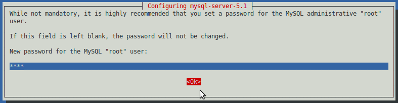
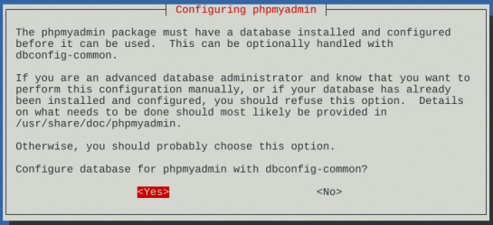
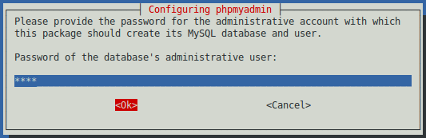
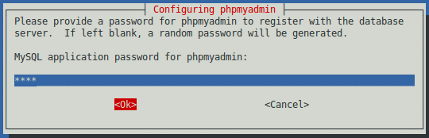

- Overview
- ProcessMaker Installation
- Step 1: Install MySQL, PHP and Apache
- Step 2: Configure PHP
- Step 3: Download & Extract ProcessMaker
- Step 4: MySQL Configuration
- Step 5: Configure Apache
- Step 6: Setting up ProcessMaker
- Step 7: Additional Configuration
- Downgrading to PHP 5.3
- Errors during Installation
Overview
Follow these instructions to install ProcessMaker 2.0 - 2.5 on top of a LAMP (Linux, Apache, MySQL, PHP) stack in Debian 6.0 (Squeeze) or later. If installing ProcessMaker 2.8 or later, see these instructions. If using earlier versions of Debian, MySQL has to be upgraded to version 5.1.6 or later.
Before installing checking the installation requirements. After installation, see Additional Server Configuration.
ProcessMaker Installation
In order to have ProcessMaker installed correctly follow the steps listed below.
Step 1: Install MySQL, PHP and Apache
If the LAMP stack isn't already installed, open a shell by going to Applications > Accessories > Terminal. At the command line, switch to the "root" user.
If using Debian 6.0 (Squeeze) or earlier, enter the following command:
php5-mcrypt php5-soap php5-xml
If using Debian 7.0 (Wheezy) or later, enter the following command:
Note: If wishing to run ProcessMaker with PHP 5.3, which is the version tested by the ProcessMaker Quality Control team, see Downgrading to PHP 5.3 below.
When apt-get installs MySQL, a dialog box will appear asking for a new root password for MySQL.

Enter a password and select the option OK. Then enter the same password a second time, to confirm it.
Install SSH Server and PhpMyAdmin
OpenSSH Server can be installed to allow the ProcessMaker server to be remotely accessed from the command line, which is very useful when executing the processmaker and gulliver commands or conducting administrative tasks. In addition, phpMyAdmin can be installed to easily view the MySQL databases used by ProcessMaker inside a web browser.
To install OpenSSH Server and phpMyAdmin:
If asked which web server PhpMyAdmin should use, press the space bar to select "apache2":

Then, select whether to configure the database with the dbconfig-common package. In most cases, it is easier to select

When asked for a password to create the MySQL databases, enter the MySQL root password:

Then enter a password which can be used to access the PhpMyAdmin web application:

Reconfirm that password by entering it a second time:

In Debian (Squeeze) 6.0, the Apache configuration file for phpMyAdmin is not automatically included in the list of sites. To add it and restart Apache:
/etc/init.d/apache2 restart
Step 2: Configure PHP
If using PHP 5.3 and later, then no configuration of PHP is required. If using PHP 5.2 which is used in Debian 5.0 (Lenny) and earlier, then PHP's configuration file php.ini needs to be edited to increase the memory limit for each session.
Edit PHP's configuration file php.ini:
Each ProcessMaker session needs a minimum of 128MB RAM to run properly, so set the memory_limit to 128M or greater:
Note: The value set for the memory_limit in php.ini should be the same value set in the System interface (or in the env.ini file).
If the php.ini file has been modified, make sure that file_uploads and short_open_tag have been enabled:
short_open_tag = On
If planning on uploading large files, as Input Documents while running processes, the max_post_size and upload_max_filesize should be increased to more than the default 2MB. For instance, if planning on uploading files as large as 24MB, then:
upload_max_filesize = 24M
Step 3: Download & Extract ProcessMaker
Go to http://sourceforge.net/projects/processmaker/files and download a recent tarball of ProcessMaker, which should be named processmaker-2.X.X.tar.gz. The versions are numbered according to the pattern MAJOR.MINOR.REVISION, such as 2.0.45.
After the download has finished, decompress the tarball in the directory where ProcessMaker will be installed. ProcessMaker can be installed in any directory which is not publicly accessible to the internet (so do NOT install it in /var/www), but it is generally installed in /opt, since it is an optional program which doesn't come from the standard repositories:
Verify that ProcessMaker was correctly decompressed:
The processmaker directory should contain the following contents:
LICENSE.txt processmaker.bat README.txt workflow
Set file permissions
Then, issue the following commands as the "root" user so that ProcessMaker can access the necessary files when run by the Apache server:
cd /opt/processmaker
chmod -R 770 shared workflow/public_html
cd workflow/engine/
chmod -R 770 config content/languages plugins xmlform js/labels
If installing ProcessMaker 2.5.0 or later, also give write permissions to generate Output Documents:
chmod -R 770 js thirdparty/html2ps_pdf/cache
Step 4: MySQL Configuration
The MySQL "root" user should already have all the necessary privileges to setup the ProcessMaker databases. If planning on using a MySQL user other than "root" to set up the ProcessMaker databases, grant a MySQL user superuser privileges to create and update databases.
Login to MySQL:
Enter the root password for MySQL.
Once in MySQL, give the user which will be running ProcessMaker superuser privileges to create create and modify MySQL databases:
Replace USER with the name of your MySQL user and PASSWORD with the password for that user. (If that user doesn't already exist, he/she will be automatically created with the above grant command. If you are running ProcessMaker on a different server than your MySQL server, then replace localhost with the domain name or IP address of the server where ProcessMaker is located.
Exit MySQL:
MySQL Configuration Issues
Setting the root Password
If MySQL doesn't have a root password, set one for better security:
If you have forgotten the root password, see these instructions to reset it.
Starting as a Service
When logging into MySQL, if the following error message appears:
Then, MySQL needs to be started as a service:
If MySQL was installed from its Debian package, it should automatically start as a service on bootup. If not, then use use update-rc.d to add it as a service:
Step 5: Configure Apache
Edit the ProcessMaker configuration file to fit your environment:
Replace your_ip_address and your_processmaker_domain with the IP address and domain name used by your ProcessMaker server:
# the ServerName with you own subdomains.
NameVirtualHost your_ip_address
#processmaker virtual host
<VirtualHost your_ip_address >
ServerName "your_processmaker_domain"
DocumentRoot /opt/processmaker/workflow/public_html
DirectoryIndex index.html index.php
<Directory "/opt/processmaker/workflow/public_html">
AddDefaultCharset UTF-8
AllowOverRide none
Options FollowSymlinks
Order allow,deny
Allow from all
RewriteEngine on
RewriteRule ^.*/(.*)$ sysGeneric.php [NC,L]
ExpiresActive On
ExpiresDefault "access plus 1 day"
ExpiresByType image/gif "access plus 1 day"
ExpiresByType image/png "access plus 1 day"
ExpiresByType image/jpg "access plus 1 day"
ExpiresByType text/css "access plus 1 day"
ExpiresByType text/javascript "access plus 1 day"
AddOutputFilterByType DEFLATE text/html
</Directory>
</VirtualHost>
Allow from all
To:
Replace your_ip_address with the IP number or domain name of the server running ProcessMaker. If only planning on running and accessing ProcessMaker on your local machine, then use the IP address "127.0.0.1". If using ProcessMaker on a machine whose IP address might change (such as a machine whose IP address is assigned with DHCP), then use "*", which represents any IP address. If not using the standard port 80, then it is necessary to also specify the port number.
If your DNS or /etc/hosts has a defined domain for ProcessMaker, then use that domain for your_processmaker_domain. Otherwise, use the same IP address for your_processmaker_domain as was used for your_ip_address.
For example, if running ProcessMaker on a server at address 192.168.1.100 with a DNS at 123.456.7.89:
#processmaker virtual host
<virtualhost 192.168.1.100>
ServerName "123.456.7.89"
DocumentRoot /opt/processmaker/workflow/public_html
DirectoryIndex index.html index.php
<directory>
...
For example, if ProcessMaker is installed in the /user/fred directory on your local machine at port 8080 with an dynamic IP assigned by DHCP:
#processmaker virtual host
<virtualhost>
ServerName "*"
DocumentRoot /user/fred/processmaker/workflow/public_html
DirectoryIndex index.html index.php
<directory>
...
Note: It is also possible to define the virtual host for ProcessMaker directly in the Apache configuration by inserting the above VirtualHost definition in the file /etc/apache2/apache2.conf.
After editing pmos.conf, add it to Apache's list of sites which are available for serving:
a2ensite pmos.conf
ProcessMaker needs to use the expires, rewrite, deflate and vhost_alias modules in the Apache 2 web server. Check to see whether these modules are enabled:
If you don't see them in the list, they can be enabled with the a2enmod command:
a2enmod rewrite
a2enmod deflate
a2enmod vhost_alias
Note: If using Apache 2.4 (found in Debian Testing/Jessie and Unstable), either enable the filter module:
Or remove the following line from pmos.conf:
After adding the web site pmos.conf and enabling modules, it is necessary to restart the Apache web server:
Apache Configuration Issues
No ServerName
If a similar warning message appears when restarting Apache:
Then, the ServerName needs to be set for Apache. Edit the Apache configuration file:
Add the line:
For instance, if running ProcessMaker from the local machine, then:
Non-standard Port
If running ProcessMaker off a port other than the default port 80, then add the following line to the file /etc/apache2/ports.conf:
For instance, if running ProcessMaker from the local machine at port 8080:
Or simply:
Note: If Apache is using the default port 80, then configure other programs (like Skype) to not use port 80. Check whether a program is currently listening on port 80 with the command:
To configure Skype to stop listening on port 80, press CTRL+O or go to Tools > Options. Under the Advanced section of the "Options" dialog box, go to the "Connection" section and enter an alternative port for Use port [ ] for incoming connections.
Disabling the default Apache site
- It works!
- This is the default web page for this server.
- The web server software is running but no content has been added, yet.
Then, disable Apache's default site:
/etc/init.d/apache2 reload
No VirtualHosts Warning
If you see the following message when reloading or restarting Apache:
Then, comment out or delete the following line in the file /etc/apache2/ports.conf:
Step 6: Setting up ProcessMaker
Open a web browser and enter the IP address (and port number if not using the default port 80) where ProcessMaker is installed. For instance, if ProcessMaker is installed at the address 192.168.10.100, then go to: http://192.168.10.100
If using ProcessMaker which is installed locally on port 8080, go to: http://127.0.0.1:8080.
Then in the web browser, use the installation wizard to complete the installation of ProcessMaker.
Step 7: Additional Configuration
Additional aspects of ProcessMaker may need to be configured. See Additional Server Configuration and the Configuration section of the wiki. Most installations of ProcessMaker need to configure the following:
Setting the Time Zone
In ProcessMaker version 2.0.29 and later, the default time zone for the ProcessMaker server is set in the env.ini configuration file. If using a previous version of ProcessMaker, see Default Time Zone.
Configuring Email
If planning on sending out email notifications or enabling users to recover forgotten passwords, then see Email - Settings to configure ProcessMaker to use an email server.
Execution of cron.php
If planning on using email notifications, events or the case scheduler, then the server running ProcessMaker has to be configured to periodically execute the cron.php file. See Executing cron.php.
Downgrading to PHP 5.3
Debian 7.X (Wheezy) uses PHP 5.4.4 and Debian Testing/Unstable uses PHP 5.6.0. At this time, there are no known incompatibility problems using these versions of PHP with ProcessMaker, but the Quality Control team has only tested ProcessMaker with PHP 5.3. If not wishing to run a ProcessMaker on an untested version of PHP, it is recommended to downgrade PHP to version 5.3.3, found in Debian 6 (Squeeze).
Switch to the "root" user and edit the /etc/apt/sources.list file:
Add the following two lines to use the Squeeze repositories:
deb-src http://ftp.us.debian.org/debian/ squeeze main contrib non-free
Then create a pinning file in /etc/apt/preferences.d/preferences:
Add the following content to the file:
Pin: release n=squeeze
Pin-Priority: 700
Package: libapache2-mod-php5
Pin: release n=squeeze
Pin-Priority: 700
Package: php-*
Pin: release n=squeeze
Pin-Priority: 700
Package: *
Pin: release a=stable
Pin-Priority: 600
If using Testing or Unstable, then change stable to testing or unstable.
Now update the list of packages:
Then, create a $PHP variable with the packages to be replaced:
Check to see that the $PHP variable has all the PHP packages:
Then, replace PHP 5.4 with PHP 5.3:
Errors during Installation
If an error occurs during the installation, check the installation log file:
It will generally be found at:
/opt/processmaker/shared/log/install_log.log
Depending on the errors found in the installation log file, check the following files:
The Apache configuration file:
/etc/apache2/apache2.conf
The ProcessMaker web site configuration file for Apache:
/etc/apache2/sites-available/pmos.conf
The PHP configuration file:
/etc/php5/apache2/php.ini
The MySQL configuration file:
/etc/mysql/my.cnf
The ProcessMaker configuration file where components are installed:
The ProcessMaker configuration file for database connections:
The ProcessMaker redirection to login screen:
If the following error appears at the login screen:

This error indicates that the installer was unable to access the MySQL databases to install the translations. Make sure that the MySQL port (which is 3306 by default) isn't blocked by a firewall and MySQL is configured to accept connections from the server running ProcessMaker. If that doesn't work, then ask for help on the forum.